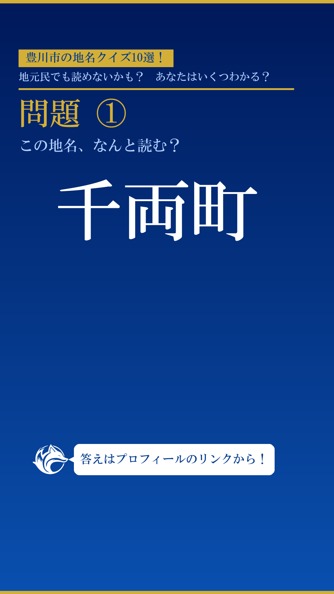
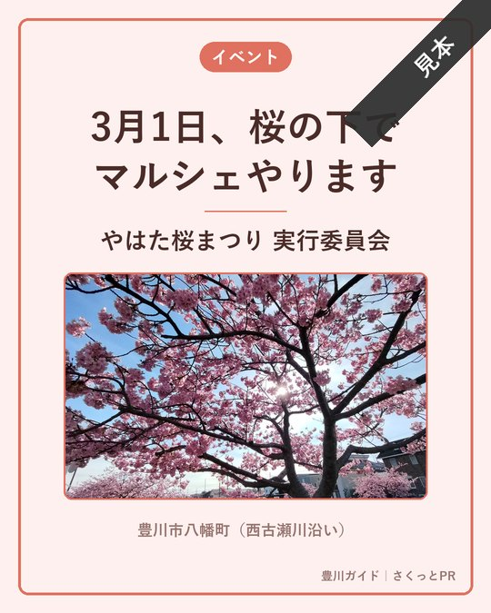

こんにちは、豊川ガイドです。今日は豊川市の難読地名をひとつご紹介します。
目次
- 千両町ってどこ？
- 読み方の答え
千両町ってどこ？

今日のお題はこちら。豊川市にある「千両町」です。
え、せんりょうちょう？ なんだかお金持ちそうな名前だね！
そう読みたくなりますよね。でも実は、ぜんぜん違う読み方なんです。
読み方の答え

正解は、千両町と書いて「ちぎりちょう」と読みます。
ちぎり！？ 一文字も合ってないじゃん！
地元の人でも意外と読めないんですよ。ほかにも豊川には、こういう難読地名がたくさんあります。
次回も豊川の難読地名をお届けします。お楽しみに！